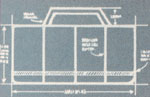
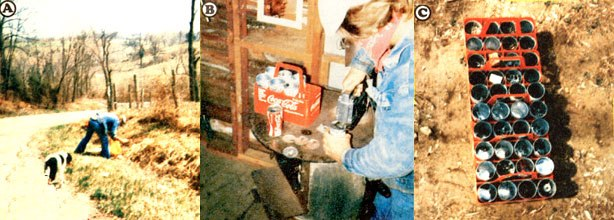

I'm sure all you do-it-yourselfing MOTHER-types out there have, at one time or another, been in the same predicament: After hours of struggling with a complicated workshop project (one of those intricate assemblies that force you to use every hand, foot, and tooth you possess to get everything lined up "just right"), you find that-at the moment of truth-all your 12mm nuts have bolted, every one of your finishing nails has punched out and gone home, and your new bottle of "super" adhesive is out looking for a telephone booth. What do you do? If you're like most folks, you shift a crucial support brace to one side of your mouth, cast an imploring eye toward the Great Handyman In The Sky, and shout, "HELP!"
Well friends, your prayers have all been answered. We at Technologies Research And Scientific Help are proud to offer (for, we hope, a limited time only) our newly developed Modular organizer Kit (partial assembly required)!
Just feast your weary eyes on these specifications: Each Kit features [1] a durable plastic transporter (it's July anteed not to consume any precious fossil fuels!), [2] eight rustproof aluminum canisters (available in a rainbow of colors and a wide variety of sizes!), [3] all the assembly instrua tions you'll need (as determined by a staff of tenthumbed researchers!), [4] designed-in versatility (this organizer can help you carry out a multitude of household duties!), [5] selective cargo capability (no more emptying the whole top drawer of your workbench into the ol' toolbox!), [6] extreme durability (heck, some of the components aren't even biodegrad able!), [7] FREE replacement parts (you heard right ... without charge, gratis, won't-cost-you-a-penny . . .for, ever!), [8] a rock-bottom initial investment (why, anyone can afford to pick up one of these beauties!).
But why squander words when the accompanying photographs tell the whole story ... better than mere print ever could!
Photo A depicts an eager customer selecting his components from one of our many local outlets. Then, in Photo B, the satisfied individual blithely assembles his Kit and finally-in Pho. to Crewe see the unavoidable result of Modular Organizer use: the tinker. er's often unattainable dream of "a place for everything and everything in its place"!
So what are you waiting for? Hurry to our nearest distributor (they're located along most every well-traveled road) and stock up while the supply lasts. Then, when envious friends ad. mire your brilliantly organized work area, you can tell them (as millions of proud owners have), "I did it with T.R.A.S.H.!"
|
PHOTOS BY THE AUTHOR OUR FOUNDER SAYS: ""My business is picking up..."" |
Technologies Research and Scientific Help will show you how! |
 |
|
 |
|
|